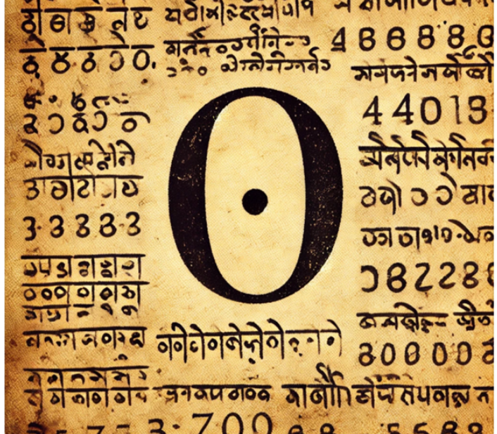

Cero como Número: 800
Aunque civilizaciones antiguas como los mayas y los babilonios ya usaban símbolos para representar la ausencia de cantidad, el concepto moderno del cero como número surgió en la India alrededor del siglo IX. El matemático indio Brahmagupta fue uno de los primeros en definir reglas para operar con el cero en su obra Brahmasphutasiddhanta. Desde la India, el concepto se difundió a través del mundo islámico y, posteriormente, llegó a Europa, revolucionando las matemáticas y el desarrollo del sistema numérico decimal que usamos hoy.
Volver a la página principal